PROFILE
| Nama Jepang | 尾田栄一郎 |
|---|---|
| Nama Romanisasi | Oda Eiichirō |
| Tanggal Lahir | 01 Januari 1975 |
| Tinggi | 172 cm |
| Golongan Darah | A |
| Pasangan | Chiaki Inaba (稲葉ちあき) |
Seorang penulis dan seniman yang berdedikasi sejak remaja, Oda mulai bekerja untuk Shueisha Shonen Jump pada usia 17 tahun dan saat ini berdiri sebagai salah satu mangaka paling terkemuka di dunia, berpenghasilan sekitar ¥3.1 miliar (US$23 juta) per tahun.
Oda dijuluki Odacchi (オダッチ?) Oleh teman-temannya di usia yang relatif muda. Ini adalah dasar dari nama karakternya di Dream Soccer King, dan banyak terutama penggemar di Kolom SBS terus memanggilnya dengan itu.
JOURNEY
Asisten Mangaka (1992 - 1997)
Pada tahun 1992, Oda pada usia 17 memulai karir manga berawal sebagai asisten tiga mangaka yang berbeda untuk mingguan majalah manga Shonen Shonen Jump. Pada tahun yang sama ia menyerahkan karya pertamanya yang disebut Wanted! Yang ia memenangkan tempat kedua di Penghargaan Tezuka. Pada awalnya ia bekerja dengan Masaya Tokuhiro pada Jungle King Ta-Chan pada tahun 1992. Pada tahun 1994, ia sempat bekerja dengan Shinobu Kaitani dengan Suizan Polisi Gang sebelum kembali ke Tokuhiro. Pada tahun yang sama ia meninggalkan kuliah sebagai mahasiswa baru. Setelah selesai menjalankan Jungle King pada tahun 1995, ia dan Tokuhiro melanjutkan untuk menciptakan Mizu No Tomodachi Kappaman, itu berjalan dari tahun 1995-1996. Dan juga di tahun yang sama ia pindah untuk bekerja dengan Nobuhiro Watsuki pada Rurouni Kenshin pada tahun 1996. Selama perjalanan ini Oda bertemu Hiroyuki Takei.
Selama 1993 dan 1994, ia menciptakan karya-karya lain seperti God's Gift for the Future (1993), Ikki Yako (1994) dan Monster (1994), yang terakhir ia kemudian memulai dengan One Piece.
Pada akhir tahun 1996, saat masih bekerja dengan Watsuki, ia menciptakan dua One-Shot untuk pameran mendatang artis manga yang disebut Romance Dawn, Versi 1 dan Versi 2, yang akan menjadi bab pertama dari One Piece. Pada tahun 1997, ia kemudian berhenti bekerja dengan Nobuhiro untuk mulai bekerja pada One Piece.
Mangaka One Piece (1997 - Sekarang)
Pada bulan Juli 1997, Weekly Shonen Jump #34 menayangkan perdana bab pertama berjudul Romance Dawn. Pada tahun-tahun berikutnya, One Piece berkembang menjadi franchise yang cukup besar, menerima adaptasi animasi pertamanya pada tahun 1998, serial anime berdurasi penuh pada tahun 1999, dan video game pertamanya pada tahun 2000.
Pada akhir 2003, Eiichiro Oda yang berusia 28 tahun bertemu dengan Chiaki Inaba, seorang model, aktris, "Campaign Girl", "Race Queen" dan "Gravure Idol". Inaba yang berusia 25 tahun berkostum dan berperan sebagai Nami di Jump Festa 2004 berpartisipasi dalam "ONE PIECE Spectacle Stage" seperti aktris dan Oda bertemu dengannya dalam salah satu penampilan ini. Inaba adalah aktris untuk pentas tontonan Jump Festa sejak 2001 hingga 2003.
Pada 7 November 2004 pasangan itu menikah dalam pernikahan pribadi dan sebagai hasil dari persatuan ini lahirlah dua anak perempuan. Pada tahun 2006, Chiaki Inaba melahirkan seorang bayi perempuan, putri pertama Oda. Oda dan Inaba kembali menjadi orang tua saat mereka menyambut putri kedua yang lahir pada tahun 2009. Keluarga itu tinggal di sebuah rumah besar yang terletak di Jiyugaoka, lingkungan kelas atas di wilayah metropolitan Tokyo; sebuah rumah yang dibeli Oda setelah kelahiran putri pertamanya pada pertengahan tahun 2006.
WORK
| Judul | Klasifikasi | Catatan |
|---|---|---|
| 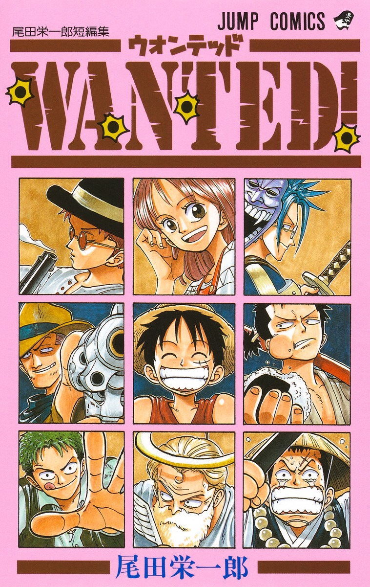 Wanted! (ウォンテッド) | One-shot | Pemenang Kelas Dua di Penghargaan Tezuka ke-44 (1992). Diterbitkan di:
|
 God's Gift for the Future (神から未来のプレゼント)
God's Gift for the Future (神から未来のプレゼント)
|
One-shot | Diterbitkan di:
|
| 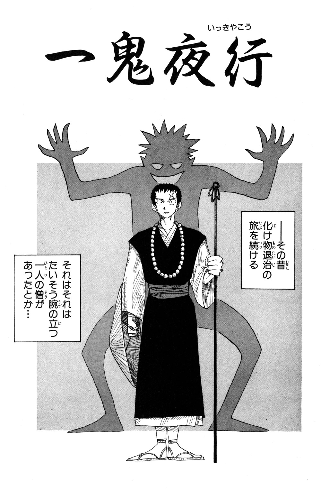 Ikki Yako (一鬼夜行) | One-shot | Pemenang Kelas Satu dalam Penghargaan Hop☆Step ke-104 (1993). Diterbitkan di:
|
| 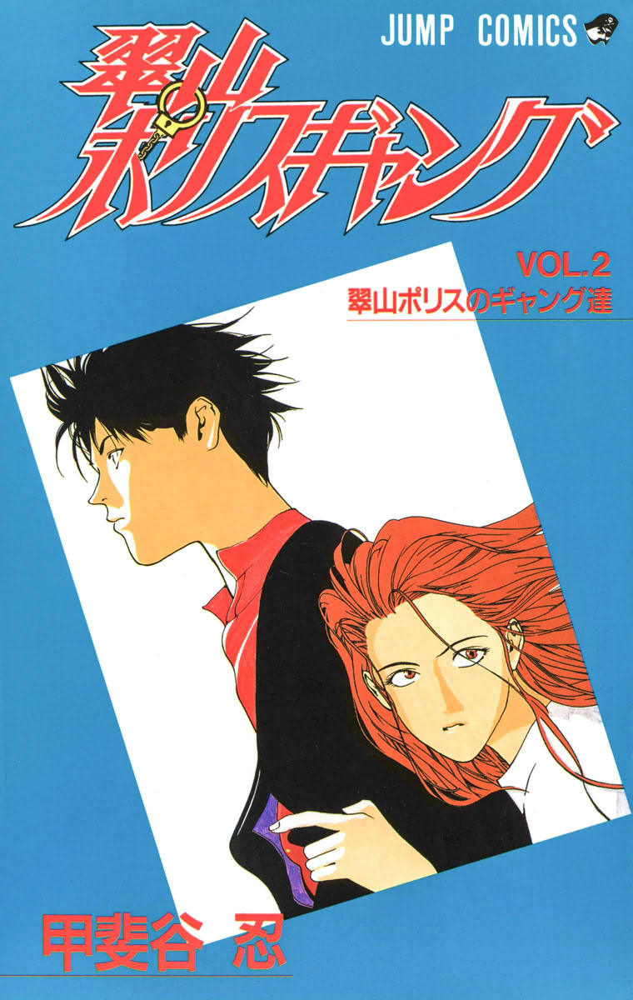 Midoriyama Police Gang (翠山ポリスギャング) | Assistance (Ch. 17—20) | Diterbitkan di:
|
| 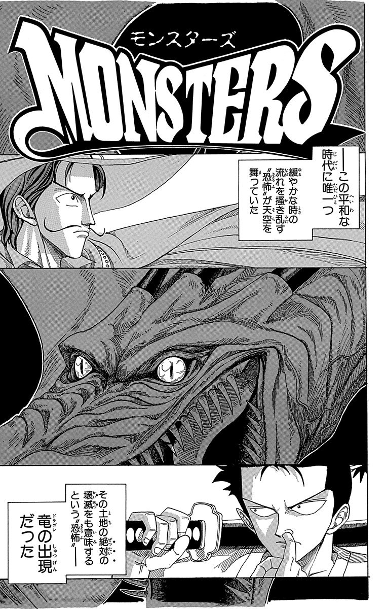 Monsters (モンスターズ) | One-shot | iterbitkan di:
|
| 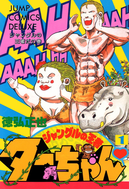 Jungle King Tar-chan (ジャングルの王者ターちゃん) | Asisten (Ch. 309—347) | Diterbitkan di:
|
| 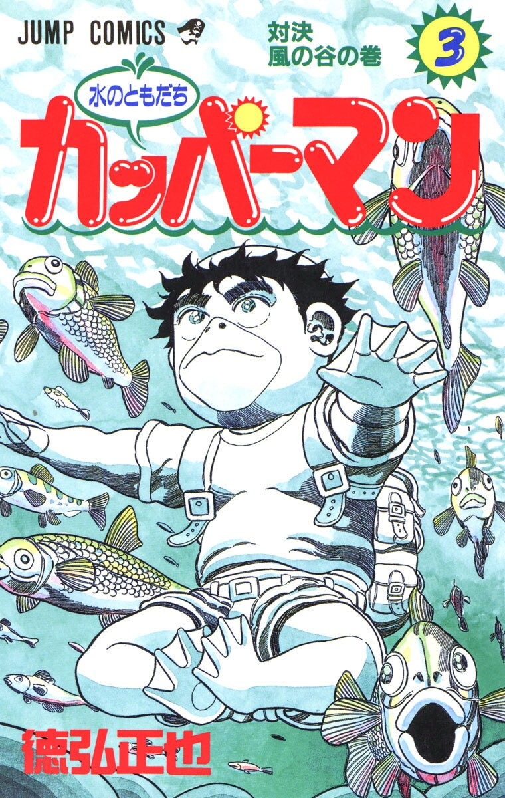 Watery Friend Kappaman (水のともだちカッパーマン) | Asisten (Ch. 1—22) | Diterbitkan di:
|
| 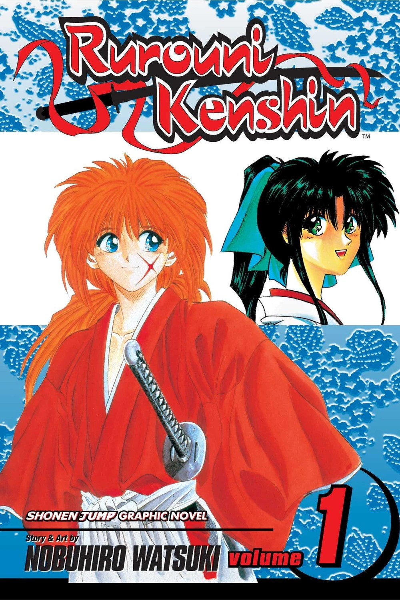 Rurouni Kenshin (るろうに剣心) | Asisten (Ch. 95—115) | Diterbitkan di:
|
| 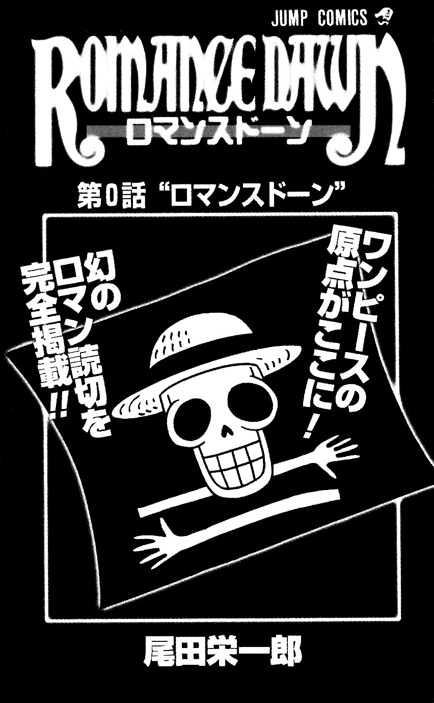 Romance Dawn (Versi 1) (ロマンス ドーン) | One-shot | Diterbitkan di:
|
| 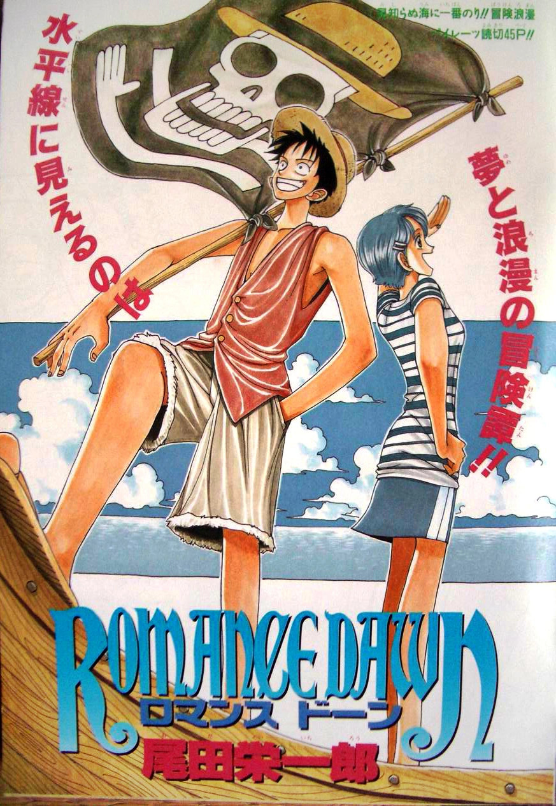 Romance Dawn (Versi 2) (ロマンス ドーン) | One-shot | Diterbitkan di:
|
| 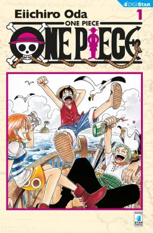 One Piece | Seri | Diterbitkan di:
|
| 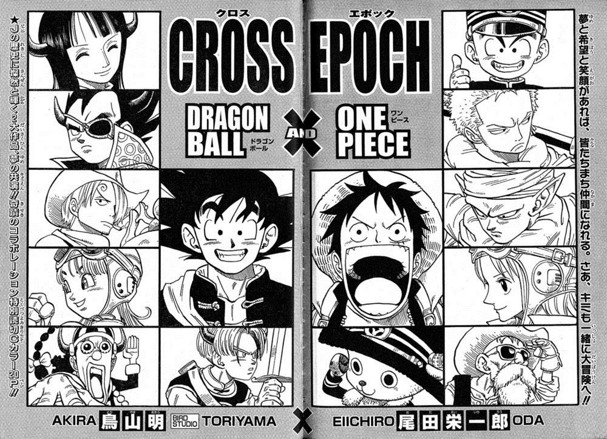 Cross Epoch (クロス エポック) | Kolaborasi One-shot | Persilangan antara One Piece dan Akira Toriyama Dragon Ball. Diterbitkan di:
|
| 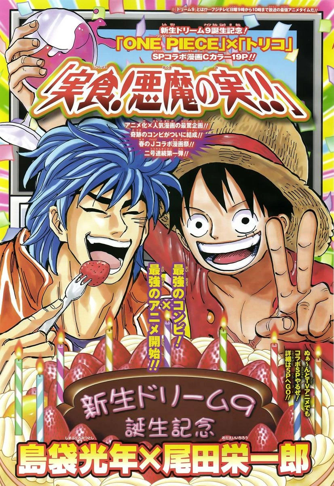 The True Food! Devil Fruit!! (実食! 悪魔の実!!) | Kolaborasi One-shot | Persilangan antara One Piece dan Mitsutoshi Shimabukuro's Toriko. Diterbitkan di:
|